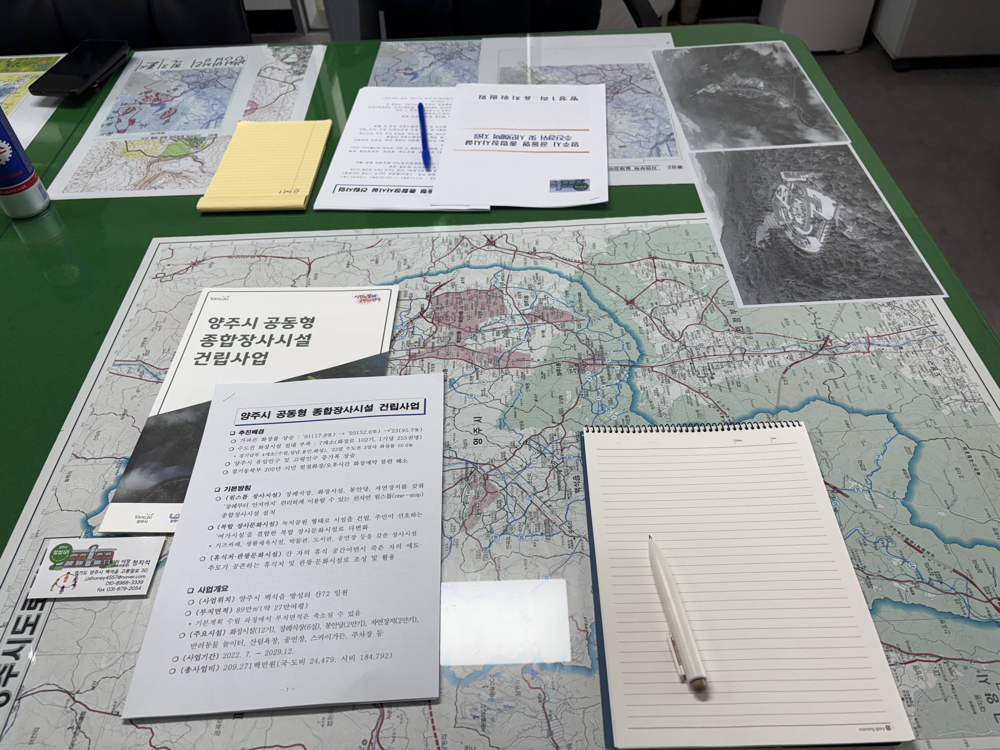
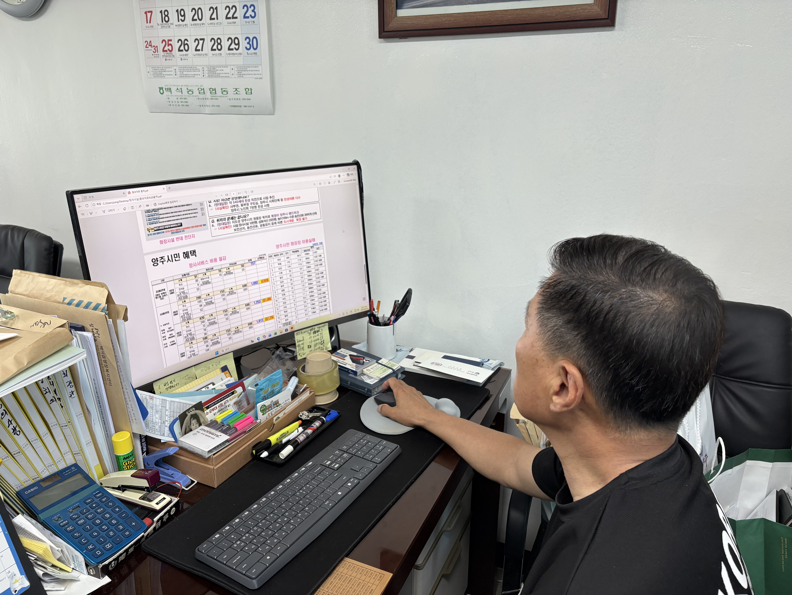
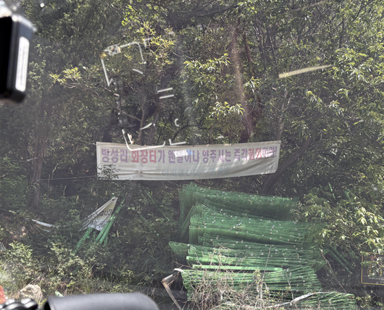
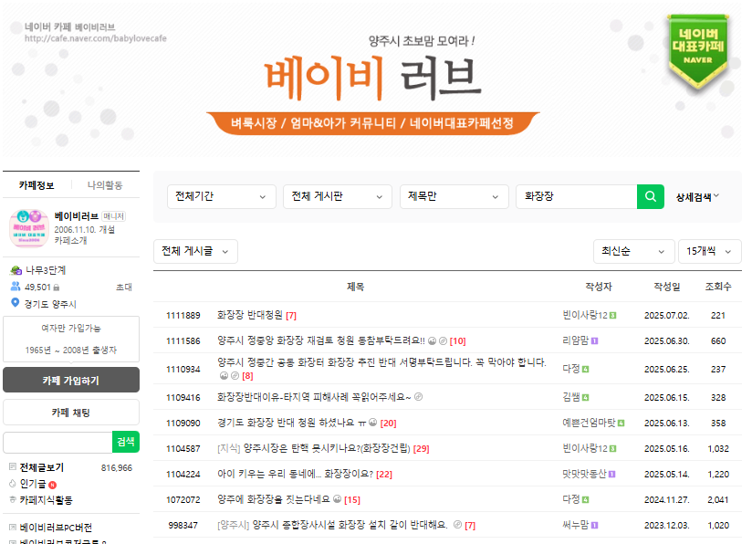
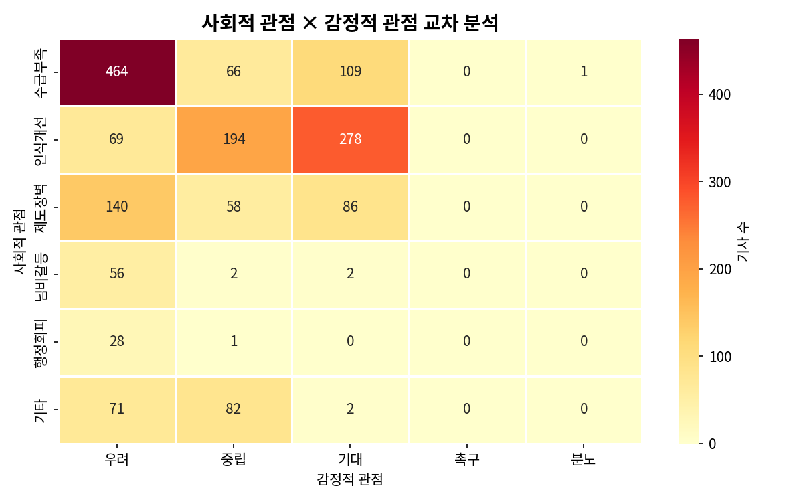
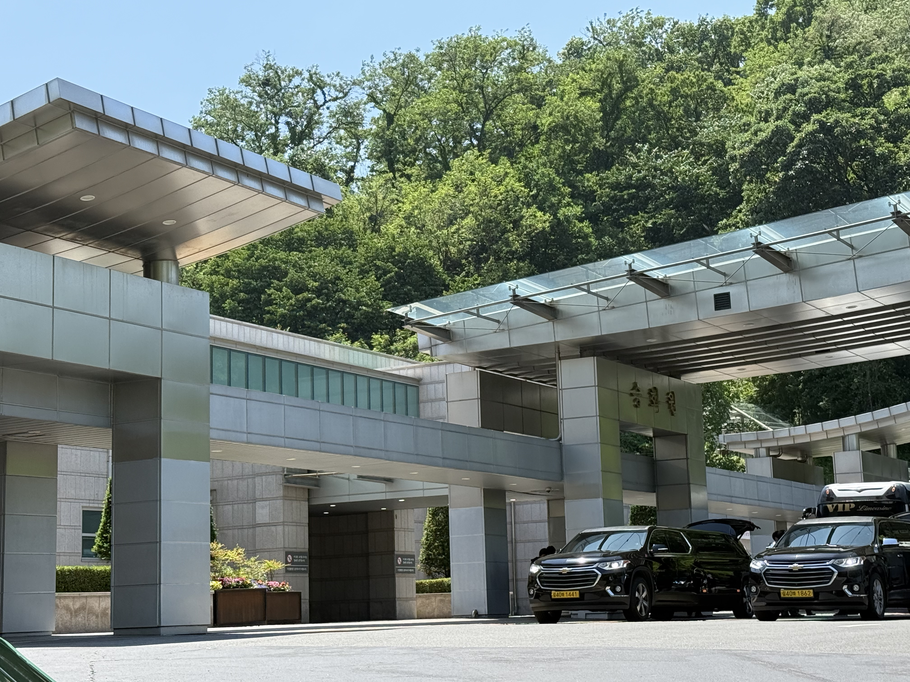
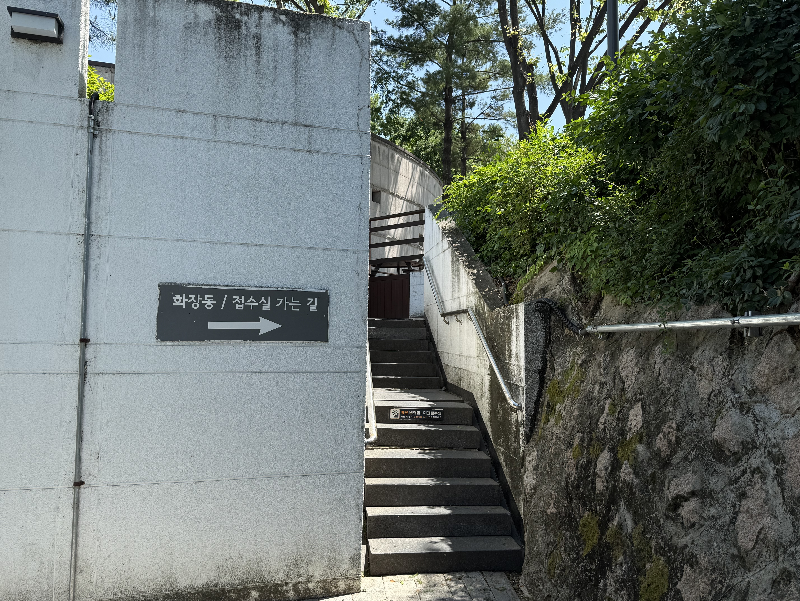
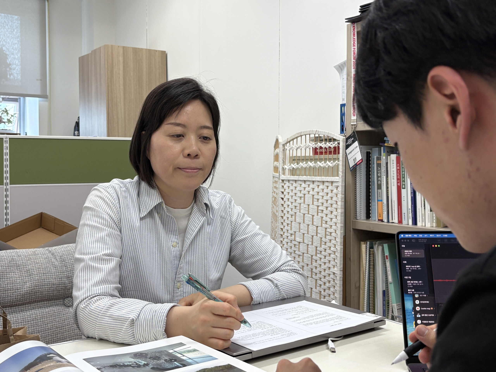

화장장 없는 경기 북부,
장례도 원정 간다
화장률 94% 시대, 경기 북부의 시설 공백과 입지 갈등이 유족의 원정 장례 부담을 키우고 있다
01
가까운 화장장이 없다는 이유로 유족은
더 멀리, 더 비싸게, 더 늦게 장례를 치른다

경기 양주시 방성1리 마을회관에서 정지석 이장은 지도부터 펼쳤다. 그의 손가락은 성남, 인천, 강원도의 화장시설을 차례로 짚었다. 모두 양주 주민들이 상을 당했을 때 실제로 찾아가는 곳들이다.
양주를 비롯한 경기 북부 상당수 지역에는 화장장이 없다. 가까운 곳에서 장례를 마무리할 수 없는 유족들은 경기 남부나 서울의 시립 화장시설 예약을 먼저 알아본다. 그마저도 자리가 없으면 인천, 강원권까지 범위를 넓혀야 한다. 정 이장은 “전국을 다 돌아다닌다고 보면 된다”며 “수도권 시설을 가장 많이 찾지만, 상황이 안 좋으면 먼 타 지역까지 원정을 가는 경우도 적지 않다”고 말했다.
문제는 거리만이 아니다. 화장장을 어디로 잡느냐에 따라 장례 일정 전체가 흔들린다. 경기 북부 유족들에게 장례의 첫 관문은 빈소가 아니라 ‘화장 예약’이다. 장례식장이나 상조업체가 빈소를 차리기 전 가장 먼저 확인하는 것도 “언제, 어디서 화장할 수 있는가”다. 화장 시간이 장례 전체의 시간표를 결정하기 때문이다.
화장장 관내·관외 이용 비용 격차 비교
예약이 하루 밀리거나 오후 늦은 시간에 화장로가 배정되면 장지 이동까지 당일에 마치기 어렵다. 이 경우 원치 않는 4일장, 5일장이 사실상 강제된다. 정 이장은 “오후 4시 이후에나 겨우 화장이 잡히면 그날로 안치하기가 현실적으로 어렵다”며 “장례가 하루 더 넘어가면 화장료뿐 아니라 운구 차량 비용, 빈소 사용료까지 함께 불어난다”고 말했다.
유족들이 해가 지기 전 안치를 마치기 위해 ‘오전 화장’에 매달리는 이유도 여기에 있다. 오후 예약밖에 잡지 못한 유족들을 위해 일부 장례시설에는 유골함을 하루 맡겨두는 임시 보관 공간까지 생겼다. 결국 경기 북부의 원정 화장은 특정 시간대를 선호하는 유족들의 선택이 아니다. 관내 화장시설의 부재와 절대적인 화장로 부족이 만들어낸 구조적 문제다. 이 문제는 초고령사회 진입과 함께 더 가팔라지고 있다.
02
화장률 94% 시대의 그늘…
‘가동 회차’만 늘려 버티는 수도권
화장시설 부족은 일시적인 예약난이 아니다. 수요 자체가 커지고 있다. 통계청에 따르면 2024년 사망자 수는 35만8569명이다. 보건복지부 화장통계에서 같은 해 화장자는 33만6937명, 화장률은 94.0%로 집계됐다. 이제 한국 사회에서 사망자의 대부분은 화장된다.
대한민국 화장률·화장자 수 증가 추이
화장률은 2005년 절반을 넘어선 뒤 빠르게 상승했다. 20년이 채 지나지 않아 화장은 한국 사회의 보편적인 장례 방식이 됐다. 사망자는 늘고, 화장률도 올랐다. 그러나 화장시설 공급은 이 변화의 속도를 따라가지 못했다. 전국 화장시설은 여전히 60여 곳 수준에 머물러 있다. 특히 수요가 집중되는 수도권에서는 기존 화장로의 운영 회차를 늘려 버티는 방식이 이어지고 있다.
현장에서는 회차를 늘려 수요를 감당한다. 과거 하루 4~5회차로 운영되던 화장로가 수요가 몰리는 시기에는 7~8회차까지 돌아간다. 화장로는 800도 안팎의 고온에서 작동한다. 한 차례 화장이 끝난 뒤 충분히 식히고 다음 고인을 모셔야 하지만, 예약이 밀리는 시기에는 그 간격이 촘촘해질 수밖에 없다.
겨울철이나 폭염기처럼 고령 사망자가 늘어나는 시기에는 예약난이 더 쉽게 드러난다. 평소에도 빠듯하게 돌아가던 시스템이 작은 수요 증가에도 흔들리는 구조다.
수도권 내부에서도 격차는 크다. 서울은 서울추모공원과 서울시립승화원에 의존하고, 경기도의 주요 화장시설은 성남, 수원, 용인, 화성 등 경기 남부에 집중돼 있다. 반면 경기 북부에는 광역 수요를 감당할 화장시설이 사실상 없다. 경기 북부 주민의 원정 화장은 개인의 선택이 아니라 권역별 시설 공백의 결과다.
지방의 문제와도 결이 다르다. 인구가 적은 지역에서는 모든 시군마다 화장시설을 둘 필요는 없다. 대신 몇 개 지자체를 광역으로 묶어 주민들이 지나치게 먼 거리까지 이동하지 않도록 하는 방식이 필요하다. 그러나 서울·수도권은 사망자와 고령 인구가 집중돼 있다. 이 지역에서는 운영 회차를 늘리거나 시간대를 조정하는 방식만으로 수요를 흡수하기 어렵다. 시설 접근성의 문제와 절대적인 공급 부족이 동시에 나타나고 있다.
전국 화장시설 관할권
03 경기 북부 ‘공동 화장장’의 무산
경기 북부의 화장장 공백을 해결하려는 시도가 없었던 것은 아니다. 양주시 방성1리는 그 대안으로 떠올랐던 곳이다. 이곳은 양주를 비롯해 의정부, 동두천, 포천 등 경기 북부 권역이 함께 사용할 공동형 종합장사시설 유치 후보지로 검토됐다. 오랜 시설 공백을 메울 수 있는 광역 장사 인프라가 될 수 있다는 기대도 컸다.


마을이 화장장 유치를 수용하려 했던 배경에는 현실적인 계산과 공익적 명분이 함께 있었다. 인근 옥정·회천 일대에 대규모 신도시가 들어서며 빠르게 발전하는 동안, 방성1리가 속한 양주 서부권은 상대적으로 개발에서 소외돼 있었다. 주민들은 대규모 공공 인프라를 유치해 지역 경제의 활로를 찾고자 했다.
시설이 들어서면 양주뿐 아니라 의정부, 동두천, 포천 주민들도 관내 서비스에 가까운 혜택을 받을 수 있었다. 경기 북부 전체의 장례 복지를 끌어올리는 광역 기반시설이라는 명분도 있었다. 주민 동의를 얻기 위해 설명회와 공청회 등 행정 절차가 진행됐고, 실제 주민 서명을 담은 동의서도 마련됐다. 사업은 한때 궤도에 오르는 듯했다.
그러나 가장 큰 벽은 화장장에 대한 오래된 거부감이었다. 주민 반대 여론에는 여전히 ‘굴뚝’, ‘검은 연기’, ‘혐오시설’이라는 이미지가 강하게 작용했다. 현대식 화장시설의 친환경성과 안전성은 충분히 설명되지 못했다. 대신 환경오염, 집값 하락, 지역 이미지 훼손에 대한 우려가 인근 지역 커뮤니티를 중심으로 빠르게 확산됐다. 실제 위험성보다 사회적 이미지가 만들어낸 공포가 갈등을 키웠다.

갈등이 커지자 지역 정치권도 움직였다. 주민 간 찬반 갈등이 정치화되면서 당초 추진되던 행정 기조와 정치적 입장도 흔들렸다. 권역 전체에 필요한 공공시설이라는 본질은 뒤로 밀렸고, 논의는 비난과 공방으로 번졌다. 이 과정에서 마을 어른들은 온라인 커뮤니티 등에서 거센 비난을 받으며 큰 상처를 입었다.
결국 방성1리는 유치 계획을 내려놓았다. 경기 북부의 장례 인프라 공백을 메울 수 있었던 시도는 갈등을 넘지 못하고 멈춰 섰다.
04 혐오시설이 아니라 국가가 책임질 생활 인프라
방성1리 사례는 화장장 문제가 단순한 입지 갈등이 아니라는 점을 보여준다. 필요성에는 공감하지만, 내 지역에는 들어오면 안 된다는 인식이 여전히 강하다. 화장장은 모두에게 필요한 시설이지만, 누구도 가까이 두고 싶어 하지 않는 시설로 남아 있다.
실제로 화장장을 둘러싼 사회적 의제들이 어떻게 다뤄지고 있는지 뉴스 데이터를 살펴보면, 이 갈등이 왜 해결되지 못한 채 겉도는가에 대한 실마리가 보인다. 2020년 2월부터 2026년 5월까지의 언론 보도 1,173건을 뉴스 빅데이터로 분석해 보니, 화장장 이슈에서 가장 비중이 큰 프레임은 '수급부족'과 '인식개선'이었다.
언론 보도에서 ‘수급부족’이 가장 많이 언급되었다는 점은 초고령사회의 화장시설 부족 문제에 대해 이미 사회적인 공감대가 꽤 두텁게 형성되어 있음을 보여준다. 하지만 흥미로운 대목은 감정적 프레임이다. 데이터 속 기사들의 감정 기조는 분노나 적극적인 행동 촉구보다는, 다가올 미래에 대한 잔잔한 ‘우려’와 불안에 머물러 있었다.

이러한 수동적인 우려는 화장시설의 필요성에는 동감하면서도, 막상 내 집 앞에 시설이 들어설 때는 선뜻 나서지 못하는 대중의 심리적 거리감을 반영하는 것으로 읽힌다. 결국 시민사회의 자율적인 양보나 소통에만 기댄 채 이 문제를 방치하면 갈등은 평행선을 달릴 수밖에 없다.
그렇다고 해결 가능성이 아예 없는 것은 아니다. 데이터 속에는 '인식개선'이라는 키워드가 '기대'라는 긍정적 감정과 교차하는 흐름도 뚜렷하게 나타난다. 현대식 시설이 안전하게 운영된다면 오해를 깨고 합의를 이뤄낼 의향이 있다는 대중의 잠재적 열망이 읽히는 대목이다.
따라서 이제는 주민들에게 일방적인 소통과 희생을 요구할 게 아니라, 관할 부처의 역할을 재정립하는 등 근본적인 행정 구조 자체를 바꾸는 시도가 필요해 보인다. 이와 함께 현대식 시설의 안전성을 투명하게 알리는 인식 개선이 병행될 때, 비로소 잔잔한 우려로 멈춰 있던 화장장 공급의 실타래도 풀릴 수 있을 것이다.
실제로 화장장에 대한 사회적 거부감은 실제 시설의 운영 현황과 거리가 멀다. 서울시립승화원의 경우 외부는 일반 공원처럼 정돈되어 있으며, 눈에 띄는 연기나 냄새 등의 공해 요소가 발생하지 않는다. 내부 역시 엄숙하고 조용한 분위기 속에서 모든 장례 절차가 동선에 따라 차분하게 이뤄진다. 현대식 장사시설은 과거의 부정적인 이미지에서 벗어나 이미 친환경적이고 체계적인 생활 인프라로 기능하고 있다.


문제는 이 간극이다. 시설의 실제 위험성과 사회적 이미지 사이의 거대한 차이가 갈등을 키운다. 그러나 이 문제를 지자체와 주민 간의 자율적 소통이나 양보에만 맡겨서는 해결하기 어렵다. 기초지자체는 표심과 민원에 취약하고, 선거 국면에서는 행정의 일관성도 흔들리기 쉽다.
을지대학교 장례지도학과 이정선 교수는 “이런 비선호 시설을 지자체장의 책임으로만 두기에는 너무 불안정하다”며 “지자체 관할에만 맡겨둘 것이 아니라 국가 차원에서 직접 정리해야 할 일”이라고 말했다.

이제 화장장 문제를 다루는 행정 패러다임을 바꿔야 한다. 주민들에게 일방적인 희생이나 이해를 요구하는 방식만으로는 부족하다. 중앙정부가 권역별 수요를 기준으로 공급 체계를 설계하고, 입지 갈등을 조정하며, 지자체가 정치적 부담 때문에 결정을 미루지 않도록 제도적 틀을 마련해야 한다.
동시에 현대식 화장시설의 안전성과 운영 방식을 투명하게 알려야 한다. 낡은 혐오 이미지를 깨는 인식 개선도 병행돼야 한다. 화장장은 평소에는 보이지 않지만, 없으면 삶의 마지막 절차가 흔들리는 필수 생활 인프라다.
죽음의 마지막 순간이 거주 지역에 따라 달라져서는 안 된다. 경기 북부 주민들이 더 멀리, 더 비싸게, 더 늦게 장례를 치르지 않도록 국가 차원의 책임 있는 결단이 필요하다.